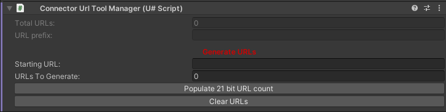

Configuring VRC Settings
There are two methods to generate the URLs for the connection:
ConnectorUrl Tool Inspector
In order to use this tool you need to add it to a GameObject and supply the starting URL and the total URLs to generate.
Once you supply the required parameters a "Generate URLs" button will appear, this will generate all of the VRCUrls required and set up the URL containers for the GameObject.
There is a helper button for calculating the total URLs required for a 21 bit message, if you are using a custom message length then please calulate the required URLs to fit your bits required:
$(2^MESSAGE_BITS_LENGTH)

ConnectorUrl Tool Window
In order to use this tool you need open the window by clicking on "Server Connector" in the top toolbar, as this is a object independent version of the ConnectorUrl Tool Inspector (see ConnectorURL Tool Inspector for explanation of the parameters) you need to also supply the object to create the URLs under.